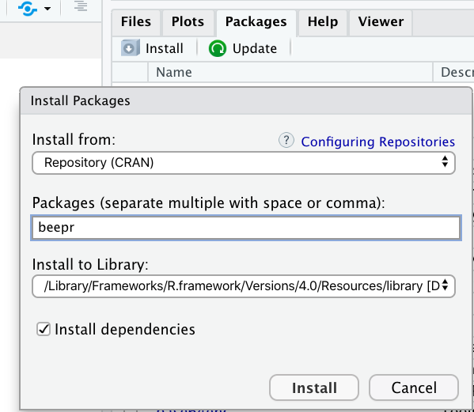
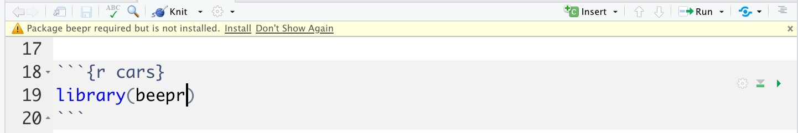
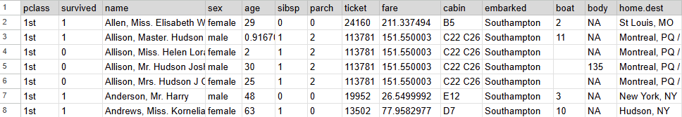
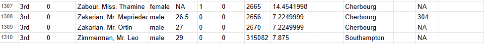
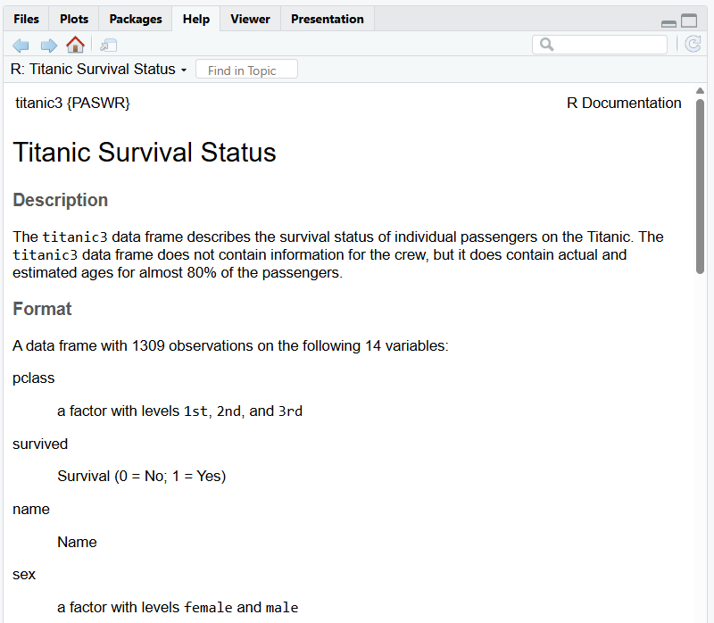
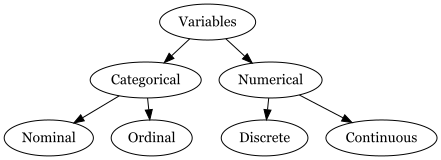

Error in `beep()`:
! could not find function "beep"Familiarizing yourself with data and summary statistics
When you buy a new phone it comes with some apps pre-installed.
If you want to use a different app you can install it.
When you download R for the first time to your computer. It comes with some packages already installed. You can also install many other R packages.
What do R packages have? All sorts of things but mainly
functions
datasets
Try running the following code:
Why are we seeing this error?
Install the package onto our computer once
install.packages() in the ConsoleLoad the package into each session/document
library() function to load entire package:: option to load a single functioninstall.packages()In your Console, install the beepr package
We do this in the Console because we only need to do it once. Don’t forget quotations!

Packages Pane > Install

If you try to skip to step 2, loading a package, without first installing it RStudio may let you know.
library()Option 1 (more common)
::Option 2 (less common)
structure is package name, ::, function()
This may be useful if
Any one around the world can create R packages.
Good part: We are able to do pretty much anything R because someone from around the world has developed the package and shared it.
Bad part: The language can be inconsistent.
Good news: We have tidyverse.
The tidyverse is an opinionated collection of R packages designed for data science. All packages share an underlying design philosophy, grammar, and data structures.
In short, tidyverse is a family of packages we will commonly use.
The data() function loads in our titanic3 data from the PASWR package.


pclass a factor with levels 1st, 2nd, and 3rdsurvived Survival (0 = No; 1 = Yes)age age in yearssibsp Number of Siblings/Spouses Aboard
The columns of a data frame are called variables
The rows of a data frame are called cases or observations
For the titanic
pclass, survived, name, sex, age, sibsp, parch, ticket, fare, cabin, embarked, boat, body, home.destThe data frame has 14 variables
The data frame has 1309 cases or observations.
pclass survived name sex age sibsp parch
1 1st 1 Allen, Miss. Elisabeth Walton female 29.0000 0 0
2 1st 1 Allison, Master. Hudson Trevor male 0.9167 1 2
3 1st 0 Allison, Miss. Helen Loraine female 2.0000 1 2
4 1st 0 Allison, Mr. Hudson Joshua Crei male 30.0000 1 2
5 1st 0 Allison, Mrs. Hudson J C (Bessi female 25.0000 1 2
6 1st 1 Anderson, Mr. Harry male 48.0000 0 0
ticket fare cabin embarked boat body home.dest
1 24160 211.3375 B5 Southampton 2 NA St Louis, MO
2 113781 151.5500 C22 C26 Southampton 11 NA Montreal, PQ / Chesterville, ON
3 113781 151.5500 C22 C26 Southampton NA Montreal, PQ / Chesterville, ON
4 113781 151.5500 C22 C26 Southampton 135 Montreal, PQ / Chesterville, ON
5 113781 151.5500 C22 C26 Southampton NA Montreal, PQ / Chesterville, ON
6 19952 26.5500 E12 Southampton 3 NA New York, NY pclass survived name sex age sibsp parch ticket
1304 3rd 0 Yousseff, Mr. Gerious male NA 0 0 2627
1305 3rd 0 Zabour, Miss. Hileni female 14.5 1 0 2665
1306 3rd 0 Zabour, Miss. Thamine female NA 1 0 2665
1307 3rd 0 Zakarian, Mr. Mapriededer male 26.5 0 0 2656
1308 3rd 0 Zakarian, Mr. Ortin male 27.0 0 0 2670
1309 3rd 0 Zimmerman, Mr. Leo male 29.0 0 0 315082
fare cabin embarked boat body home.dest
1304 14.4583 Cherbourg NA
1305 14.4542 Cherbourg 328
1306 14.4542 Cherbourg NA
1307 7.2250 Cherbourg 304
1308 7.2250 Cherbourg NA
1309 7.8750 Southampton NA Rows: 1,309
Columns: 14
$ pclass <fct> 1st, 1st, 1st, 1st, 1st, 1st, 1st, 1st, 1st, 1st, 1st, 1st, …
$ survived <int> 1, 1, 0, 0, 0, 1, 1, 0, 1, 0, 0, 1, 1, 1, 1, 0, 0, 1, 1, 0, …
$ name <fct> "Allen, Miss. Elisabeth Walton", "Allison, Master. Hudson Tr…
$ sex <fct> female, male, female, male, female, male, female, male, fema…
$ age <dbl> 29.0000, 0.9167, 2.0000, 30.0000, 25.0000, 48.0000, 63.0000,…
$ sibsp <int> 0, 1, 1, 1, 1, 0, 1, 0, 2, 0, 1, 1, 0, 0, 0, 0, 0, 0, 0, 0, …
$ parch <int> 0, 2, 2, 2, 2, 0, 0, 0, 0, 0, 0, 0, 0, 0, 0, 0, 1, 1, 0, 0, …
$ ticket <fct> 24160, 113781, 113781, 113781, 113781, 19952, 13502, 112050,…
$ fare <dbl> 211.3375, 151.5500, 151.5500, 151.5500, 151.5500, 26.5500, 7…
$ cabin <fct> B5, C22 C26, C22 C26, C22 C26, C22 C26, E12, D7, A36, C101, …
$ embarked <fct> Southampton, Southampton, Southampton, Southampton, Southamp…
$ boat <fct> 2, 11, , , , 3, 10, , D, , , 4, 9, 6, B, , , 6, 8, A, 5, 5, …
$ body <int> NA, NA, NA, 135, NA, NA, NA, NA, NA, 22, 124, NA, NA, NA, NA…
$ home.dest <fct> "St Louis, MO", "Montreal, PQ / Chesterville, ON", "Montreal…
Identifying the type of variable will help us to know which plots, summary statistics, and models are appropriate!
Numerical variables have numeric meaning, so math operations like taking a mean make sense. Numerical variables are either:
Note not all numbers are numerical variables (i.e., zip codes are numbers but we can’t add, divide, etc and get something meaningful.)
Categorical variables do not have numeric meaning, we can’t do mathematical operations
Categorical types:
logical: TRUE (1), FALSE (0)character: takes string values (e.g. a person’s name, address)factor: categorical variables with different levels . . .Numerical types:
integer: integer (for discrete)double: floating decimal (for continuous)numeric: integer or doubleR storage typesRows: 1,309
Columns: 14
$ pclass <fct> 1st, 1st, 1st, 1st, 1st, 1st, 1st, 1st, 1st, 1st, 1st, 1st, …
$ survived <int> 1, 1, 0, 0, 0, 1, 1, 0, 1, 0, 0, 1, 1, 1, 1, 0, 0, 1, 1, 0, …
$ name <fct> "Allen, Miss. Elisabeth Walton", "Allison, Master. Hudson Tr…
$ sex <fct> female, male, female, male, female, male, female, male, fema…
$ age <dbl> 29.0000, 0.9167, 2.0000, 30.0000, 25.0000, 48.0000, 63.0000,…
$ sibsp <int> 0, 1, 1, 1, 1, 0, 1, 0, 2, 0, 1, 1, 0, 0, 0, 0, 0, 0, 0, 0, …
$ parch <int> 0, 2, 2, 2, 2, 0, 0, 0, 0, 0, 0, 0, 0, 0, 0, 0, 1, 1, 0, 0, …
$ ticket <fct> 24160, 113781, 113781, 113781, 113781, 19952, 13502, 112050,…
$ fare <dbl> 211.3375, 151.5500, 151.5500, 151.5500, 151.5500, 26.5500, 7…
$ cabin <fct> B5, C22 C26, C22 C26, C22 C26, C22 C26, E12, D7, A36, C101, …
$ embarked <fct> Southampton, Southampton, Southampton, Southampton, Southamp…
$ boat <fct> 2, 11, , , , 3, 10, , D, , , 4, 9, 6, B, , , 6, 8, A, 5, 5, …
$ body <int> NA, NA, NA, 135, NA, NA, NA, NA, NA, 22, 124, NA, NA, NA, NA…
$ home.dest <fct> "St Louis, MO", "Montreal, PQ / Chesterville, ON", "Montreal…As a data scientist it is your job to check the type(s) of data that you are working with. Do not assume you will work with clean data frames, with clean names, labels, and types.
Some common measures of centrality:
mean()median()Some common measures of spread:
sd()var()quantile()The summarize() function can help us compute multiple summary stats together!
Consider the following data which represents the number of hours slept for 10 people who were surveyed.
| 7 | 7.5 | 8 | 5.5 | 10 | 7.2 | 7 | 8 | 9 | 8 |
\[\bar x = \frac{7+7.5+8+5.5+10+7.2+7+8+9+8}{10} = 7.72\]
The mean is calculated by summing the observed values and then dividing by the number of observations.
\[\bar x = \frac{x_1 + x_2+.... x_n}{n}\]
where \(\bar x\) represents the mean of observed values, \(x_1\), \(x_2\), … \(x_n\) represent the n observed values.
If all the observations are listed from smallest to largest (or vice versa), the median is the observation that falls in the middle.
| 5.5 | 7 | 7 | 7.2 | 7.5 | 8 | 8 | 8 | 9 | 10 |
In this case, we have two numbers in the middle 7.5 and 8. The average of these numbers would be the median. In this case, the median is 7.75.
\[\frac{7.5 + 8}{2} = 7.75\]
Median is also the 50th percentile indicating that 50% of the data fall below this value.
First quartile (Q1) is the point at which 25% of the data fall below of.
Third quartile (Q3) is the point at which 75% of the data fall below of.
Q1 and Q3 can be considered 25th and 75th percentiles respectively.
Interquartile Range (IQR) = Q3 - Q1 which represents the middle 50% of the data.
Consider Dr. Medina teaching three classes. Pretend all of these classes have 5 students. Below are exam results from these classes.
Class 1: 80 80 80 80 80
Class 2: 76 78 80 82 84
Class 3: 60 70 80 90 100
All of these classes have a mean of 80 points. Do you think the mean describes these classes well? Can you think of any other way to describe (in words not in numbers) how these classes differ?
| xi | \(x_i - \bar{x}\) | \((x_i - \bar{x})^2\) |
|---|---|---|
| 5.5 | 5.5-7.72 = -2.22 hr | (-2.2 hr)2 = 4.9284 hr 2 |
| 7 | 7-7.72 = -0.72 hr | (-0.72 hr)2 = 0.5184 hr 2 |
| 7 | 7-7.72 = -0.72 hr | (-0.72 hr)2 = 0.5184 hr 2 |
| 7.2 | 7.2-7.72 = -0.52 hr | (-0.52 hr)2 = 0.2704 hr 2 |
| 7.5 | 7.5-7.72 = -0.22 hr | (-0.22 hr)2 = 0.0484 hr 2 |
| 8 | 8-7.72 = 0.28 hr | (0.28 hr)2 = 0.0784 hr 2 |
| 8 | 8-7.72 = 0.28 hr | (0.28 hr)2 = 0.0784 hr 2 |
| 8 | 8-7.72 = 0.28 hr | (0.28 hr)2 = 0.0784 hr 2 |
| 9 | 9-7.72 = 1.28 hr | (1.28 hr)2 = 1.6384 hr 2 |
| 10 | 10-7.72 = 2.28 hr | (2.28 hr)2 = 5.1984 hr 2 |
\(\Sigma_{i = 1}^{n} (x_i - \bar x )^2 =\)
\(4.9284 + 0.5184 + 0.5184 + 0.2704 + 0.0484 +\) \(0.0784 + 0.0784 + 0.0784+ 1.6384 + 5.1984 = 13.356 \text{ hr}^2\)
Note that \(n\) represents the number of observations which means \(n = 10\).
\[s^2 = \frac{\Sigma_{i = 1}^{n} (x_i - \bar x )^2}{n-1}\]
\[s^2= \frac{13.356}{10-1} = 1.484\text{ hr}^2\]
\[s = \sqrt{\text{sample variance}} = \sqrt{\frac{\Sigma_{i = 1}^{n} (x_i - \bar x )^2}{n-1}}\]
\[s= \sqrt{1.484} = 1.218195 \text{ hr}\]
In a similar fashion maximum can be found by using the max() function.
| Quantile | Percentile | Special Name |
|---|---|---|
| 0.25 | 25th | First quartile |
| 0.5 | 50th | Median |
| 0.75 | 75th | Third quartile |
quantile(age, 0.25, na.rm = TRUE) quantile(age, 0.5, na.rm = TRUE)
1 21 28
quantile(age, 0.75, na.rm = TRUE)
1 39We would expect 25% of the data to be less than 21. We would expect 50% of the data to be less than 28. We would expect 75% of the data to be less than 39.
summarize()We can get multiple summaries with one summarize() function.
mean(age, na.rm = TRUE) median(age, na.rm = TRUE)
1 29.88113 28Note how the variables names in this table is not easy to read.
summarize()In order to display the variable names more legibly in the output, we can assign variable names to numerical summaries (e.g. mean_age).